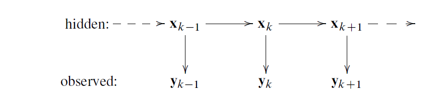
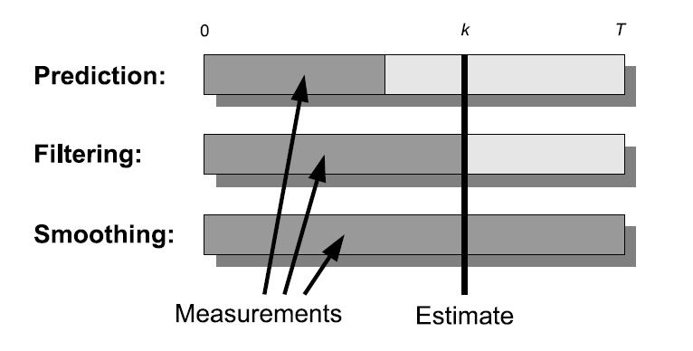

| 应用名称 | 状态量 | 观测量 |
|---|---|---|
| GPS | 位置、星历 | 多个卫星的波达时间、星历 |
| 目标跟踪 | 位置、速度 | 传感器量测量 |
| 多目标跟踪 | 同上、目标数量、数据关联 | 传感器数据 |
| 组合惯性导航 | 位置、速度 | GPS、IMU |
| 传染病 | 人群 | 量测信息 |
还有生物过程、通信、音频信号处理、随机最优控制、学习系统、物理系统。值得一提的是，随机最优控制还有时间最短、误差最小的概念在里面。
维纳滤波–> 卡曼滤波 –> 贝叶斯滤波
最优滤波和平滑被认为是统计反演问题：
 我们现在知道的是观察值\(y_{1},\dots,y_{T}\),目的是估计出\(x_{1},\dots,x_{T}\)。但是观察的\(y\)存在测量误差的影响。从贝叶斯的角度来说就是已知所有测量去计算所有状态的联合后验分布。理论上通过贝叶斯公式就可以得到的。
但是完整的后验分布公式存在一个严重的缺点：当获得新的测量值时，整个后验分布都要重新计算，而在动态估计中，这个问题很严重。随着时间步长增加，完整的后验分布维数也会增加。
于是我们将条件放宽，只需计满足特定状态的边缘分布时，计算量就少了一个数量级，我们将动态模型限定为马尔可夫序列。在贝叶斯滤波和平滑中，用边缘分布代替完整的联合分布。
滤波分布：知道k前的测量值\(y_{1:k}\)，计算\(x_{k}\)的边缘分布。
\[p\left(\boldsymbol{x}_{k} | \boldsymbol{y}_{1: k}\right), k=1, \cdots, T\]
预测分布：在测量值\(y_{1:k}\)已知情况下，计算\(x_{k+n}\)
\[p\left(\boldsymbol{x}_{k+n} | \boldsymbol{y}_{1 : k}\right), k=1, \cdots, T, n=1,2, \cdots\]
平滑分布：在测量值\(y_{1:T}\)已知情况下，计算\(x_{k}\)
\[p\left(\boldsymbol{x}_{k} | \boldsymbol{y}_{1: T}\right), k=1, \cdots, T\]

文中列出了几种有闭型解的滤波和平滑问题。
由于贝叶斯最优滤波和平滑方程解比较复杂，所以会有很多数值逼近方法。
具体见[书上p8-9]所示(https://max.book118.com/html/2018/1215/7150201115001164.shtm)。
我们假设动态模型为马尔可夫序列。
则参数的边缘后验分布为： \[p\left(\boldsymbol{\theta} | \boldsymbol{y}_{1, T}\right) \propto p(\boldsymbol{\theta}) \prod_{k=1}^{T} p\left(\boldsymbol{y}_{k} | \boldsymbol{y}_{1, k-1}, \boldsymbol{\theta}\right)\]
结合平滑分布公式，可得到状态和参数所有的边缘联合分布： \[p\left(\boldsymbol{x}_{k}, \boldsymbol{\theta} | \boldsymbol{y}_{1, T}\right)=p\left(\boldsymbol{x}_{k} | \boldsymbol{y}_{1, T}, \boldsymbol{\theta}\right) p\left(\boldsymbol{\theta} | \boldsymbol{y}_{1, T}\right)\] 但是计算不出完整的联合后验分布。
为了求参数我们进行积分：
\[\begin{aligned} p\left(\boldsymbol{x}_{k} | \boldsymbol{y}_{1, T}\right) &=\int p\left(\boldsymbol{x}_{k}, \boldsymbol{\theta} | \boldsymbol{y}_{1:T}\right) \mathrm{d} \boldsymbol{\theta} \\ &=\int p\left(\boldsymbol{x}_{k} | \boldsymbol{y}_{1: T}, \boldsymbol{\theta}\right) p\left(\boldsymbol{\theta} | \boldsymbol{y}_{1: T}\right) \mathrm{d} \boldsymbol{\theta} \end{aligned}\] 但是由于积分难算，我们用近似求解：使用MCMC获得参数样本，便可以得到上述积分的蒙特卡洛逼近。